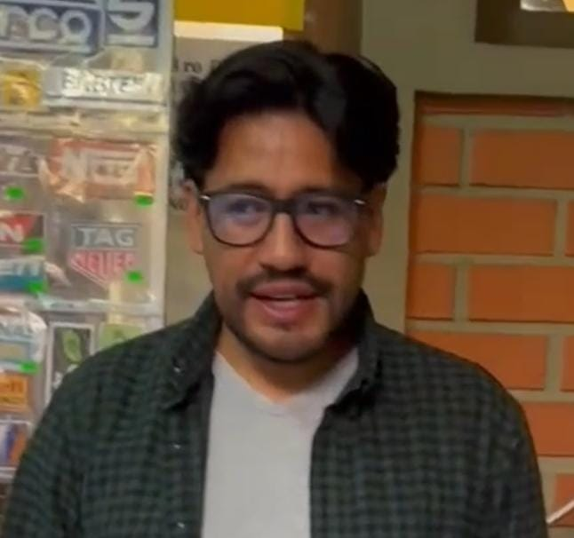
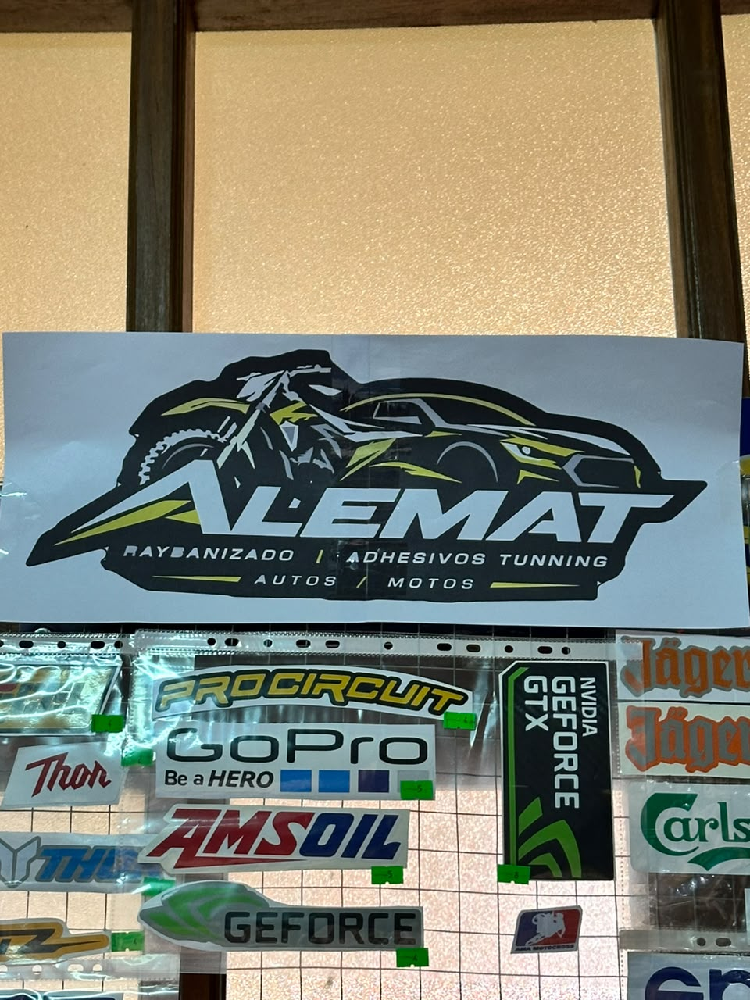
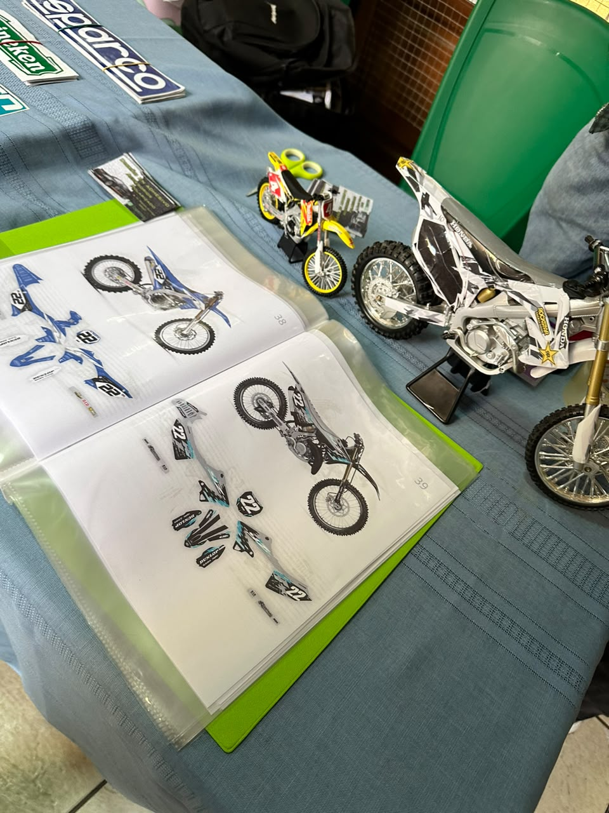
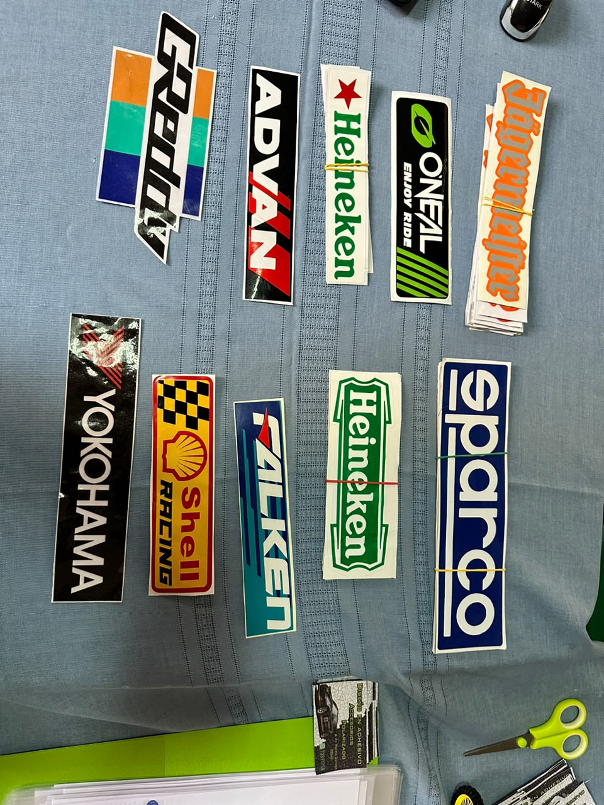

FEXPO ITSEC SUCRE 2026
¡Descubre los emprendimientos de esta feria!
¡Descubre los emprendimientos de esta feria!

Nombre: Joaquin Ampuero
Ubicacion del emprendimiento: Av. Marcelo Quiroga #840
Presentación: ¡Redefiniendo la estetica de tu auto y moto!
En ALEMAT transformamos tu pasion en estilo. Somos especialistas en raybanizado de alta calidad y adhesivos tuning personalizados para autos y motos.
Dale a tu vehiculo el aspecto unico y la proteccion que se merece
La empresa cuenta con multiples productos elaborados para personalizar tu vehiculo con los mejores diseños tuning y servicios de polarizado


